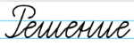
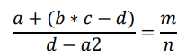

Задачи на линейные алгоритмы
1. Даны длины ребер a, b, c прямоугольного параллелепипеда. Найти его объем V = abc и площадь поверхности S = 2(ab + bc + ac).

2. Найти значение переменных m и n по формуле, и получить общий ответ отношения m и n.

3. Даны два числа a, b, с. Найти их среднее арифметическое.
Задачи на разветвящиеся алгоритмы
1. Ввести число. Если оно неотрицательно, вычесть из него 10, в противном случае прибавить к нему 10
2. Ввести два числа. Если их произведение отрицательно, умножить его на -2 и вывести на экран, в противном случае увеличить его в 3 раза и вывести на экран.
3. ВВвести два числа. Если сумма этих чисел четная, найти произведение, в противном случае, найти частное этих чисел.
Задачи на циклические алгоритмы
1. Напечатать ряд из повторяющихся чисел 20 в виде:
20 20 20 20 20 20 20 20 20 20
2. Вывести столбиком следующие числа: 2.8 … 8.8
3. Напечатать числа следующим образом:
10 10.4
11 11.4
...
25 25.4